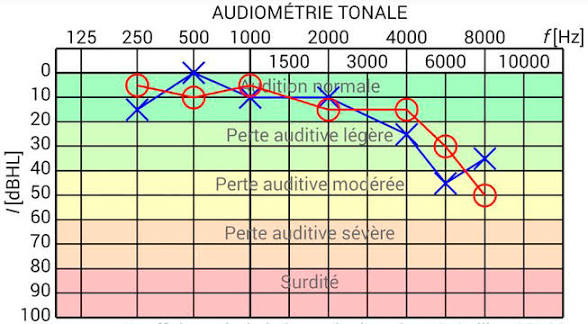
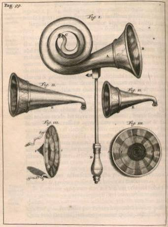
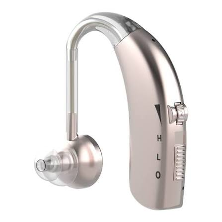
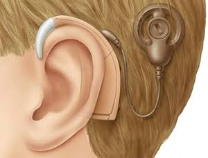
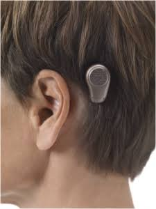
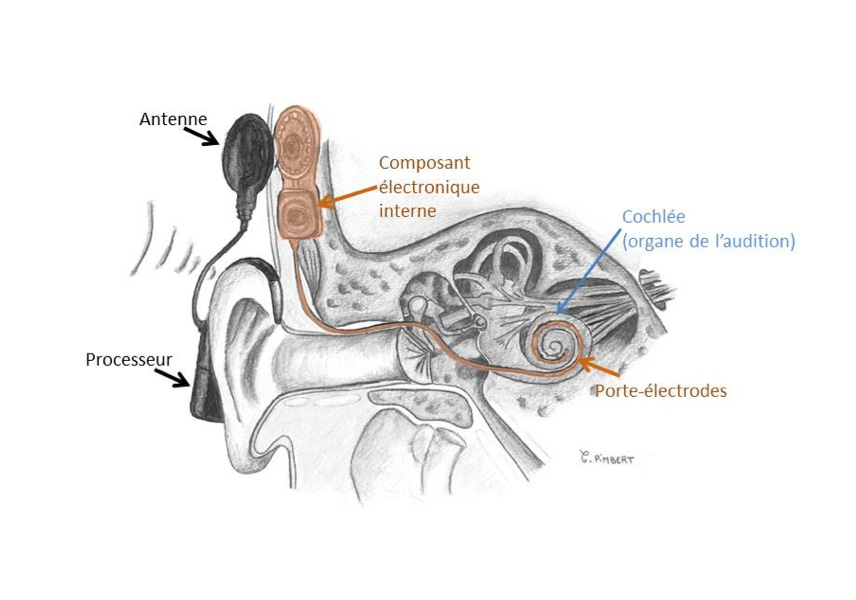
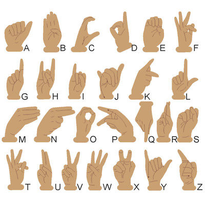

Structure du conduit auditif
L'oreille humaine est divisée en trois grandes parties : l'oreille externe capte les sons, l'oreille moyenne les amplifie mécaniquement et l'oreille interne les convertit en signal nerveux. Cliquez sur les lettres pour en savoir plus sur chaque zone.

Oreille externe
Composée du pavillon (auricule) et du canal auditif externe, elle capte et canalise les ondes sonores vers le tympan. Sa forme caractéristique aide à localiser les sons dans l'espace, notamment dans le plan vertical.
Oreille moyenne
Cavité remplie d'air contenant la chaîne des osselets — marteau, enclume et étrier. Ces trois os, les plus petits du corps humain, transmettent et amplifient les vibrations du tympan vers l'oreille interne.
Tympan
Fine membrane élastique qui vibre sous l'effet des ondes sonores. Son déplacement, de l'ordre du nanomètre pour les sons faibles, met en mouvement la chaîne ossiculaire. Une perforation entraîne une surdité de transmission souvent réversible.
Cochlée (limaçon)
Organe en spirale de l'oreille interne contenant les cellules ciliées. La cochlée sépare les fréquences : les sons aigus sont traités à la base, les graves à l'apex. Elle réalise la transduction mécano-électrique.
Cellules ciliées
Il en existe environ 15 000 dans chaque oreille. Ce sont elles qui transforment le mouvement mécanique en influx nerveux. Non régénérables, leur destruction par le bruit, les médicaments ou le vieillissement est définitive.
Nerf auditif (VIII)
Achemine les informations électriques vers le cortex auditif du cerveau. Il est composé d'environ 30 000 fibres nerveuses, chacune répondant à une gamme de fréquences spécifiques.
Surdité & troubles de l'audition
On parle de surdité dès qu'une perte auditive dépasse 20 dB. Elle peut être légère, moyenne, sévère ou profonde, et toucher une ou les deux oreilles.
Surdité de transmission
Le son ne parvient pas correctement à l'oreille interne, en raison d'un bouchon de cérumen, d'une otite, d'une perforation du tympan ou d'une malformation des osselets. Souvent traitable médicalement ou chirurgicalement.
Surdité de perception
Atteinte des cellules ciliées de la cochlée ou du nerf auditif. Généralement irréversible. La presbyacousie (surdité liée à l'âge) en est la forme la plus courante : elle débute par les hautes fréquences.

Audiométrie tonale — lecture d'un audiogramme
Acouphènes & hyperacousie
Les acouphènes sont des sons perçus sans source extérieure (sifflements, bourdonnements). Ils touchent 15 % de la population adulte et peuvent être fortement invalidants. L'hyperacousie est une sensibilité exacerbée aux sons ordinaires, souvent associée à un traumatisme sonore.
Aides auditives : du cornet acoustique à l'implant
Depuis des siècles, l'humain cherche à compenser la perte auditive. Des premières cornes animales aux dispositifs numériques d'aujourd'hui, voici une traversée des grandes inventions.




← Faites défiler pour voir tous les appareils →
Focus : l'implant cochléaire
Composé d'une partie externe (processeur sonore et bobine de transmission) et d'une partie interne implantée chirurgicalement (récepteur + porte-électrodes), l'implant cochléaire est indiqué pour les surdités sévères à profondes lorsque les prothèses conventionnelles ne suffisent plus.
L'opération dure environ 2 heures. La rééducation orthophonique qui suit est essentielle, en particulier chez le jeune enfant, pour apprendre à interpréter les signaux électriques comme des sons.
En France, environ 8 000 implantations sont réalisées chaque année. On estime à 800 000 le nombre de porteurs d'implants cochléaires dans le monde.

Coupe schématique de l'implant cochléaire
La Langue des Signes Française
La LSF est une langue à part entière, avec sa propre grammaire, sa syntaxe et son vocabulaire. Elle est utilisée par environ 100 000 personnes en France. Reconnue officiellement par la loi du 11 février 2005, elle peut être choisie comme première langue d'enseignement pour les enfants sourds.
Une langue visuo-gestuelle
Contrairement à ce qu'on croit souvent, la LSF n'est pas une traduction mot à mot du français. La syntaxe est différente : l'espace est utilisé pour indiquer les relations entre les éléments, et le visage joue un rôle grammatical.
Il existe autant de langues des signes que de pays — ASL aux États-Unis, BSL en Grande-Bretagne, DGS en Allemagne. Elles ne sont pas mutuellement intelligibles.
La dactylologie (alphabet manuel) permet d'épeler lettre à lettre les mots qui n'ont pas de signe propre : noms propres, termes techniques, etc.

Dactylologie — alphabet de la LSF
Test auditif — explorez vos limites
L'oreille humaine perçoit théoriquement les fréquences de 20 Hz à 20 000 Hz. Avec l'âge, les hautes fréquences disparaissent progressivement. Utilisez un casque ou des écouteurs pour un résultat fiable.
🎧 Test de fréquence auditive
Appuyez sur Démarrer. La fréquence va progressivement monter de 20 Hz à 20 000 Hz. Cliquez sur le bouton chaque fois que le son disparaît ou réapparaît.
Résultat estimé
⚠ Ce test est indicatif et dépend de votre matériel audio. Il ne remplace pas un audiogramme réalisé par un professionnel de santé.